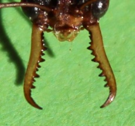

Makrofotografie von Ameisen
Mit dem Begriff Makrofotografie werden Bilder bezeichnet, die einen Abbildungsmaßstab von bis zu 1:1 aufweisen. Dies bedeutet, dass das fotografierte Objekt formatfüllend abgebildet wird, also das gesamte Bild ausfüllt. In Kombination mit der Insektenfotografie geraten herkömmliche Digitalkameras dabei schnell an ihre Leistungsgrenzen.
Dieser Artikel soll einige Tipps zur Ameisenfotografie geben und eine kleine Orientierungshilfe in Bezug auf Kameras und sinnvolles Zubehör in allen Preissegmenten sein, das zur Ameisenfotografie oder allgemein zur Fotografie von Insekten geeignet ist und sich im Praxistest bewährt hat.
Allgemein
_Myrmecia_nigriceps.jpg.html){kind=link}

Die Makrofotografie mag als eigener Kosmos, oder als kleiner Teil der Fotografie betrachtet werden. Im Allgemeinen sind die Gesetzmäßigkeiten jedoch einfach durchschaubar. Um brauchbare Nahaufnahmen kleiner Objekte zu gewinnen braucht es ein geeignetes Objektiv und eine geeignete Kamera. Unter "geeignet" ist für die Linse die Fähigkeit zusammengefasst innerhalb eines kleinen Raumes so viel Licht einzufangen, dass das ursprüngliche Bild nach dem Durchlaufen etlicher Linsen ohne große Qualitätsverluste zur Kamera gelangen kann. Für die Digitalkamera versteht sich unter "geeignet" die Eigenschaft das durch ein Makroobjektiv in die Kamera eingeleitete Licht so genau verarbeiten zu können, dass es zwischen dem Lichtbild und der digitalisierten Version so geringe Qualitätsschwankungen ergeben wie möglich. Dies ergibt sich unter anderem aus der Fähigkeit das Bild auf den Chip zu bringen, auch wenn sehr kurze Belichtungszeiten verwendet werden. Eine geeignete Kamera lässt sich nicht unbedingt auf die Anzahl ihrer Megapixel zurückführen. Je nach Verarbeiteten Bauteilen kann die Bildqualität mit zunehmender Anzahl an Megapixeln sogar abnehmen.
Bei geeigneten Lichtverhältnissen und mit ein wenig Geduld und Übung können auch mit handelsüblichen Digitalkameras, die ein integriertes Objektiv besitzen brauchbare Makroaufnahmen von Ameisen gelingen. Ein geeignetes Bildbearbeitungsprogramm, kann unter Anderem ebenfalls helfen aus Aufnahmen von Kameras mit weniger "Leistung" das bestmögliche Resultat herauszuholen. Weiterhin hilft es das gleiche Objekt mehrmals mit verschiedenen Einstellungen abzulichten, und dann das beste Resultat herauszusuchen, wie das auch bei "üblicher" Fotografie der Fall ist. So können auch Digitalkameras ohne Makroobjektiv, und ohne Spiegelreflex brauchbare Nahaufnahmen generieren, dies braucht jedoch viel Zeit, etwas Übung und ebenfalls viel Geduld.
Deshalb ist es empfehlenswert, sollte man eine erstklassige Qualität der Nahaufnahmen und die flexible und schnelle Anwendbarkeit zur Priorität erklären, eine entsprechende Spiegelreflexkamera mit einem Makroobjektiv entsprechender Brennweite zu verwenden.
Tipps
Anfüttern
Zur Ruhigstellung im Gelände kann man sich die hohe Affinität von Ameisen zu Honigtau zu Nutze machen: An einem Tropfen Zuckerwasser oder verdünntem Honig halten Arbeiterinnen gerne an um zu trinken.
Kühlen
Da Ameisen wie die meisten Insekten ihre Temperatur nicht selbst regeln können (Ausnahme: größere Staaten von Waldameisen), sind sie von der Außentemperatur abhängig. Ein kurzer Aufenthalt im Kühlschrank verlangsamt daher alle Bewegungen. Achtung: Bei (sub)tropischen Arten können niedrige Temperaturen zum Tod führen.
Kameras & Zubehör
Nahlinsen
Nahlinsen werden vor das Objektiv geschraubt oder geklemmt und verringern den minimal möglichen Fokussierabstand. Sie können die Bildqualität beeinträchtigen, ermöglichen aber einen bequemen und günstigen Einstieg in die Makrofotografie.
kompakte Digitalkameras
- Canon Power Shot SX120 IS, Beispielbilder
- Canon PowerShot SX150 IS, Nachfolgemodell von SX120, Beispielbilder
- Ricoh Caplio R7, Beispielbilder
Bridgekameras
- Konica Minolta DiMage A200, Beispielbilder
Spiegelreflex
Diese Kameras sind grundlegend alle zur Makrofotografie geeignet, die Wahl eines geeigneten Objektivs bzw. des Zubehörs ist hier entscheidend.
Retroadapter (Umkehrring)
Umkehrringe sind günstig (um 10 €) und erlauben die Verwendung z. B. eines normalen Zoomobjektivs auf einer Spiegelreflexkamera im Makrobereich.
Makroobjektive
Siehe auch
Weblinks
- Seite von Alexander Wild mit herausragend exzellenten Ameisenbildern
- Tipps für die Ameisen-Makrofotografie für Bestimmungszwecke (ameisen-net.de)
- Digitale Makrofotografie - Spezialgebiet Ameisen von R. Störmer
- wissenschaftliche Fotografie von Ameisen mit vielen Tipps (en, antwiki.org)
- Wikipedia: Makrofotografie